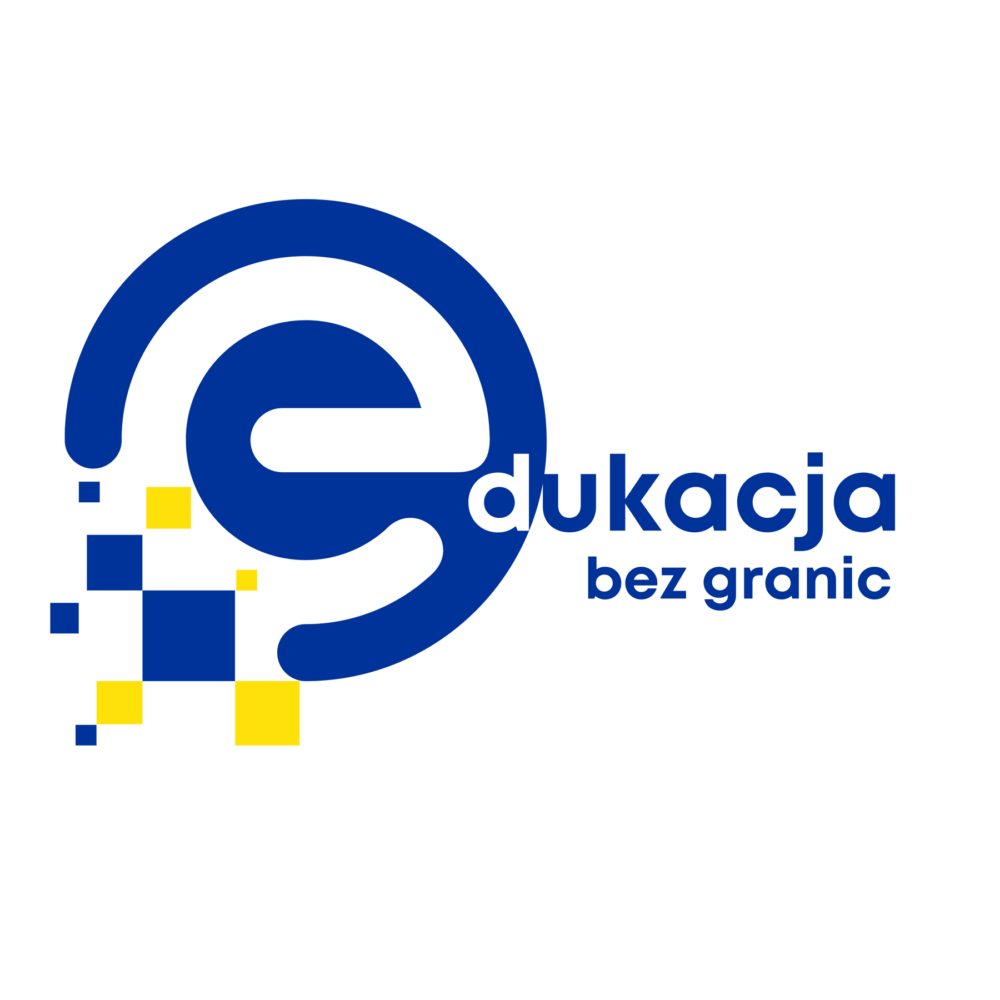

AI w pracy urzędu
gotowy panel szkoleniowy
gotowy panel
AI w pracy urzędu
Praktyczne wykorzystanie AI w pracy biurowej, urzędowej, edukacyjnej i szkoleniowej.
Otwórz panelJedno miejsce dla paneli szkoleniowych, materiałów, ćwiczeń i narzędzi prowadzącego.

Praktyczne wykorzystanie AI w pracy biurowej, urzędowej, edukacyjnej i szkoleniowej.
Otwórz panelRozpoznawanie manipulacji, sprawdzanie źródeł, analiza nagłówków, postów i przekazów medialnych.
Jasne komunikaty, wystąpienia publiczne, praca z głosem, strukturą wypowiedzi i prezentacją.
Projektowanie angażujących aktywności, mechanik gry, zadań, punktacji i pracy zespołowej.
Empatia, regulacja emocji, współpraca, komunikacja i świadome budowanie relacji w grupie.
Bezpieczne linki, phishing, hasła, dane, procedury zgłaszania i podstawowe nawyki cyfrowe.
Uważność, koncentracja, odporność na przeciążenie, mikropraktyki i świadoma praca z napięciem.